Powered By:
Powered By:
Respon anda telah disimpan! Terima kasih!

Semua data telah disimpan

Data anda tidak dapat disimpan. Sila pastikan sambungan intenet anda stabil.

Kajiselidik ini hanya boleh dilakukan dari jam 6 pagi sehingga 8 malam